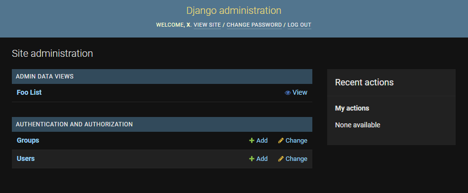
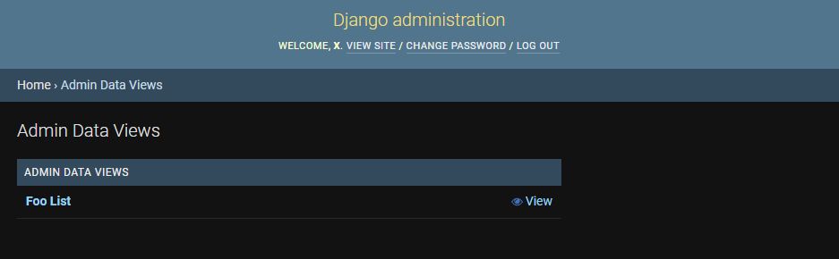
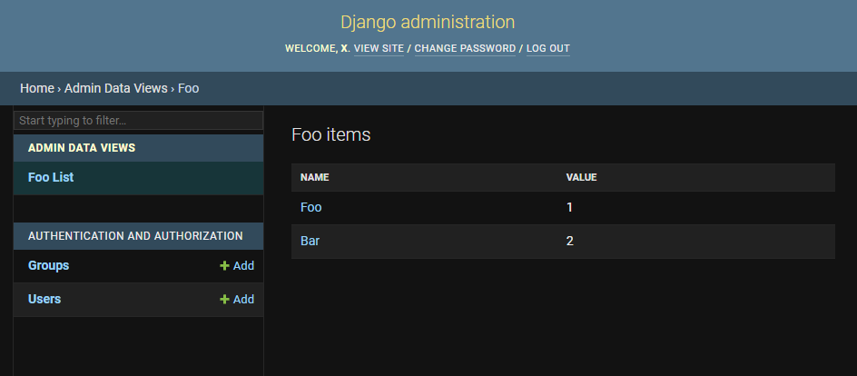
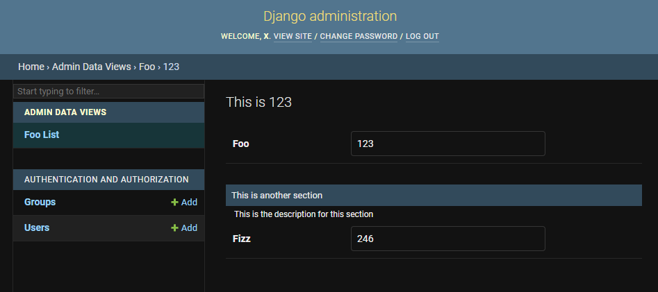

Setup
① Add admin_data_views to installed in settings.py apps after django.contrib.admin
# project/settings.py
INSTALLED_APPS = [
...
"django.contrib.admin",
"admin_data_views",
...
]
② Create data functions
from django.http import HttpRequest
from admin_data_views.typing import TableContext, ItemContext
from admin_data_views.utils import render_with_table_view, render_with_item_view, ItemLink
@render_with_table_view
def foo_list_view(request: HttpRequest, **kwargs) -> TableContext:
return TableContext(
title="Foo items",
table={
"Name": [ItemLink("Foo", idd=123), ItemLink("Bar", idd=124)],
"Value": ["1", "2"],
},
)
@render_with_item_view
def foo_items_view(request: HttpRequest, idd: int, **kwargs) -> ItemContext:
return ItemContext(
slug=idd,
title=f"This is {idd}",
data=[
{
"name": None,
"description": None,
"fields": {
"Foo": idd,
},
},
{
"name": "This is another section",
"description": "This is the description for this section",
"fields": {
"Fizz": idd * 2,
},
# Optional help text can be added like this
# "help_texts": {
# "Fizz": "Fizz means this."
# },
},
],
)
render_with_table_view is used to render the data in a table view.
The view takes a single argument request, and must return a dictionary
matching the TableContext TypedDict.
render_with_item_view is used to render the data in an item view.
The view takes an argument request and any number or path arguments,
and must return a dictionary matching the ItemContext TypedDict.
ItemLink is used to add links to the table view's items' views.
It should be used on the items of the first key in the table.
Additional kwargs can be provided if the item view needs them.
kwargs can contain additional arguments passed to admin.site.urls
in urlpatterns.
help_texts can be added optionally for each key. The key must match the
key in the fields, but not all need to be given. For nested fields, help
text can be given for the whole nested object or for each individual key.
...
{
...
"fields": {
"foo": {
"zero": "",
"one": {
"1": "2",
},
"two": [
{
"11": "22",
},
],
},
},
"help_texts": {
"foo": {
# no help text for 'zero'
"one": {
"1": "this is one",
},
"two": "This is the two list",
},
},
...
}
...
③ Add configuration to project settings.py
# project/settings.py
ADMIN_DATA_VIEWS = {
"NAME": "Admin Data Views", # Default
"URLS": [
{
"route": "foo/",
"view": "path.to.function.foo_list_view",
"name": "foo_list",
"items": {
"route": "<int:idd>/",
"view": "path.to.function.foo_items_view",
"name": "foo_item",
},
},
],
}
④ Add admin site urls to urlpatterns in project urls.py
# project/urls.py
from django.contrib import admin
from django.urls import path
urlpatterns = [path("admin/", admin.site.urls)]
⑤ Now the views should be available in the admin panel under the ADMIN DATA VIEWS section.




New: Each item view will also have a download link to download the contents in JSON form!